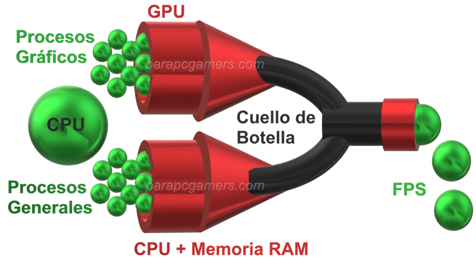

ARTÍCULO TÉCNICO
Actualizaciones críticas y seguridad del sistema
Introducción
Mantenimiento de software: actualizaciones críticas seguridad del sistema operativo y
prevención

de
cuellos

de
botella. Actualizaciones Críticas de Seguridad ¿Qué son las actualizaciones de seguridad? Son parches o correcciones que los fabricantes lanzan para arreglar fallos o agujeros de seguridad

que
descubren
en
el
sistema
operativo. ¿Por qué debo actualizar mi computadora? Mucha gente piensa que mantener el software actualizado es solo para que aparezcan cosas
nuevas
o
para
que
el
sistema
se
vea
más
bonito.
Pero
la
verdad
es
que
las
actualizaciones
son
súper
importantes
para
la
seguridad
y
el
rendimiento
de
tu
computadora.
Además,
cuando
el
software
no
está
bien
cuidado,
empiezan
a
aparecer
los
cuellos
de
botella:
esos
problemas
que
hacen
que
todo
vaya
lento
aunque
el
hardware
sea
bueno.
Tipo de actualización ¿Qué hace? Actualizaciones de seguridad Arreglan vulnerabilidades que hackers pueden explotar Actualizaciones de funciones Agregan nuevas características al sistema Actualizaciones de controladores Mejoran el funcionamiento de hardware Actualizaciones de apps Corrigen errores y mejoran rendimiento Cómo Configurar las Actualizaciones Correctamente En Windows 11/10: Ve a Configuración → Windows Update → Opciones avanzadas: Configuración Razón Recibir actualizaciones de otros productos de Microsoft Actualiza Office y otras apps Descargar actualizaciones a través de conexiones limitadas Ahorra datos si usas internet móvil Notificarme cuando sea necesario reiniciar Te avisa y no se reinicia solo Al colocar a programar el reinicio él lo hará cuando no la estés utilizando Que reinicie cuando no estés usando la laptop Prevención de Cuellos de Botella ¿Qué es un cuello de botella? Un cuello de botella es cuándo uno de los componentes del computador es mucho más lento
que
los
demás.
Ese
componente
“lento”
limita
el
rendimiento
el
rendimiento
de
todo
los
equipos,
aunque
las
otras
piezas
sean
muy
potentes . Los cuellos de botella más comunes son: Cuello de botella Síntomas Causas RAM insuficiente Todo se traba al abrir varios programas Tener 4 GB Disco duro HDD lento La laptop tarda minutos en encender No tener SSD Procesador viejo Programas modernos no corren bien CPU de hace 8+ años Software desactualizado Apps lentas, incompatibilidades, bugs No actualizar desde hace meses Muchos programas al inicio Tarda una eternidad en encender Apps que se abren solas Archivos temporales acumulados El disco se llena y todo va lento No limpiar nunca Cómo el software desactualizado crea cuello de botella Mantenimiento Preventivo del Software